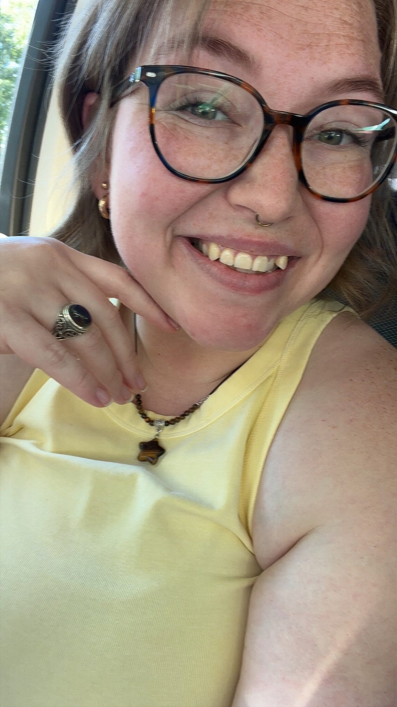

Cell: 206-556-1385
Web: moriarty.com
Email: stolliver94@yahoo.com
I am a skilled editor and writer with a perfectionist streak
Major: Technical Writing & Editing
Technical writing, creative writing, editing, proofreading
Microsoft productivity software (Word, Excel, etc), web design, Madcap Flare, Windows, MacOS